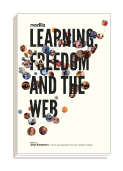

Get the book!
by Anya Kamenetz and the participants of the 2010 Mozilla Festival
How can the ideas of the open source movement help foster learning? What are the most effective ways to bring learning to everyone? How does openness help the spread of knowledge? Part-exhibition catalog, part manifesto, this will serve as a concise, fun-to-read introduction to what Mozilla's doing in learning.